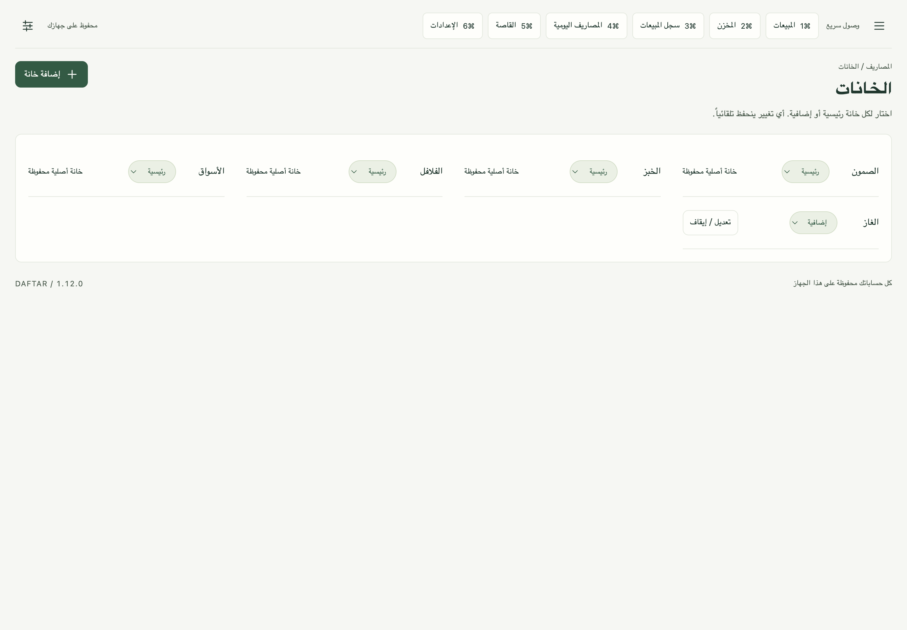

Historical 19-phase version. Superseded by the current 12-phase plan.
Phase 04 — Expense categories
Status: planned, not implemented. Date: 2026-10-27. Depends on: 02, 03.
Outcome: Expense categories can be managed without losing historical references.
Master plan · Screenshot gallery · Design contract · Accounting contract
Work to deliver
Acceptance for this feature
Screenshot references
These are current Electron screenshots with synthetic data, except the explicitly labelled design board and report HTML. They specify composition and current behavior; they do not prove a Flutter implementation. Phone captures are narrow current-UI references, not native Android/iPhone captures. See the capture contract before comparing pixels.


Handoff for implementation
Read the master plan, this phase, its screenshot set and the linked source evidence. Implement phase 04 only after its dependencies are complete. First report any source/reference mismatch. Use the current design without additional features; ask for the owner’s phase-specific edits when beginning the work. Keep the Electron app and real records safe. End with the working feature, tests, Flutter screenshots, documented differences and updated completion evidence. Do not mark planned work as implemented.